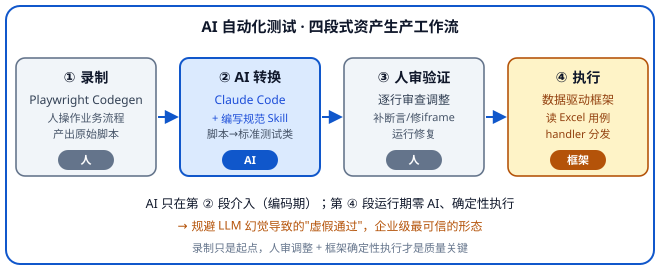

AI 自动化测试：方法论与实践
运行期零 AI、AI 全在编码期——企业级最可信的测试资产生产形态。
这套方案不是"AI 自动跑测试"，而是"AI 辅助的测试资产生产流水线"：录制（Playwright）→ AI 转换（Claude Code + 规范 Skill）→ 人审验证 → 数据驱动执行。AI 只在第二段（编码期）介入，运行期是确定性的数据驱动框架、零 AI。"AI 只生成不执行"这个边界，恰恰规避了 LLM 幻觉导致的"虚假通过"——企业级落地最可信的形态。呼应总纲：信任但验证。
一、为什么是"AI 在编码期，不在运行期"
很多人想象"AI 测试"=AI 自己打开浏览器跑、自己判断对错。但企业级落地的真实形态不是这样，原因有三：
- 运行期要稳定可复现——CI 每次跑同样用例必须结果一致，不能依赖"每次推理可能不同"的 LLM。
- LLM 会幻觉——让 AI 运行时判断"测试通过没"，它可能把失败说成通过（虚假通过），这在 CI 里是灾难。
- AI 真正的价值在降门槛——录制 + 生成测试类骨架，让"写一个测试"从小时级降到分钟级；而非替代测试设计本身。
所以务实路线：AI 生成测试资产（测试类代码 + Excel 用例骨架），框架确定性执行。生成阶段容忍 AI 的不确定性（反正要人审），执行阶段要 100% 确定（数据驱动）。
二、四段式工作流

五步细化（每步标注"谁做"）：
| 步骤 | 动作 | 输入 → 输出 | 谁做 |
|---|---|---|---|
| ① 录制 | Playwright Codegen 录制业务操作 | 人操作被测系统 → 原始 Python 脚本 | 人 |
| ② 整理 | 标注关键操作、剔除冗余 | 原始脚本 → 整理后的脚本 | 人 |
| ③ AI 转换 | Claude Code + 规范 Skill 生成标准测试类 | 脚本 + 需求描述 → 测试类（含元数据/动态数据/断言） | AI |
| ④ 编排 | 注册 handler，编 Excel 步骤 | 测试类 → 可执行用例 | 人（Web 编辑器） |
| ⑤ 验证 | 运行 + 修复 + 确认稳定 | 用例 → 稳定资产入库 | 人 |
第 ③ 步的 Claude Code 指令示例：
请根据以下 Playwright 录制脚本，生成符合框架规范的测试类：
模块：课程管理
功能：创建文档类课程
录制脚本内容：[粘贴录制脚本]
要求：
- 继承测试基类
- 使用 @handler_registry.register 装饰器注册（必须带 editor_meta）
- 使用 test_data 动态生成测试数据（时间戳，避免重复冲突）
- 优先用框架通用方法（input_text / click_button 等），无法覆盖的写自定义方法
- 关键业务节点补软断言三、规范即 Prompt（最值得复用的方法论）
这是本方案最有教学价值的发现：团队把"测试类编写规范"沉淀成一个 Claude Code Skill（一份约 380 行的规范文档作为 Skill 正文），用斜杠命令触发。规范本身就是提示词——AI 生成质量的稳定性靠"约束规范"而非"自由发挥"。
3.1 必须遵守的 8 条硬规范
| # | 规范 | 为什么 |
|---|---|---|
| 1 | 环境参数预留（ENV_DATA，每参数加注释） | 多环境差异不硬编码，Web 编辑器读注释当标签 |
| 2 | test_data 动态参数（时间戳 + 缓存） | 重复运行数据不冲突 |
| 3 | 主方法只做调度 | 获取环境→缓存→iframe→解析→流程→验证→return |
| 4 | add 流程 return 新增数据 | 供 Excel _save_as 步骤间传递 |
| 5 | 每步有日志 | 失败可追溯 |
| 6 | 每步有注释 | 可读性 |
| 7 | 等待策略（减少 time.sleep） | 用 Playwright 内置等待，稳定且快 |
| 8 | 映射表控制类型 | 多类型新增用 TYPE_FILES 分发 |
3.2 三套模板（按场景选）
| 场景 | 模板 | 特点 |
|---|---|---|
| 一个新增有多种业务类型 | 模板 A（多类型新增） | 映射表 + 类型分发 + 多子流程 |
| 单一新增流程 | 模板 B（简单新增） | 单流程 + return 创建的名称 |
| 不新增数据，验证页面功能 | 模板 C（页面点检） | val 路由分发 + 软断言 + 环境数据 |
给 AI 规范的本质：不是让它"自由创作测试"，而是让它在这三套模板 + 8 条规范里填空——产出自然符合团队标准。
四、元数据驱动可视化（AI 生成 ↔ 非技术人员编辑 闭环）
AI 生成的测试类必须带 editor_meta 元数据。Web 可视化编辑器通过 handler_registry.get_type_meta() 自动读取元数据渲染表单。这形成了一个闭环：
- AI 产出：结构化代码 + 元数据（字段、标签、下拉选项）
- 运营/测试人员：在 Web 端拖拽编辑用例（不碰代码）
- 二者解耦：开发写 handler，运营编 Excel，各司其职
# 每个 handler 注册必须带 editor_meta —— 它是 Web 编辑器渲染表单的"schema"
@handler_registry.register('addcourse', editor_meta={
'label': '创建课程', # 编辑器下拉里显示的中文名（必填）
'fields': ['val', 'val1'], # 该 handler 用的字段（必填）
'field_labels': { # 字段中文标签（必填）
'val': '课程类型',
'val1': '文件格式'
},
'group': '课程管理', # 分组（必填）
'dropdowns': { # 固定选项用下拉，没有则不加（可选）
'val': ['文档类', '视频类', '音频类'],
'val1': ['docx', 'pdf', 'mp4']
},
'save_as_options': ['course_name'], # return 值可作变量传递（新增类必填）
'custom_key_options': [], # 自定义键提示，如 ${user.id}
})
def create_course(self, data, dict_param, parent=None):
...editor_meta 直接写在 handler 代码旁，编辑器自动读取——无需再到别处手动维护映射表。这是"代码即配置"的实践。五、动态数据 + 软断言（两个关键技术点）
5.1 动态数据：把录制时的硬编码改成动态值
录制时填的"测试课程001"会被硬编码，第二次运行就"名称已存在"。规范要求 AI 转换时必须改成动态值：
@property
def test_data(self):
timestamp = datetime.datetime.now().strftime("%Y%m%d%H%M%S")
env_data = self.get_env_data(self.ENV_DATA) # 按环境取差异值
return {"name": f"自动化测试_{timestamp}", "category": env_data.get("category", "")}
# 主方法中必须缓存！否则每次访问 test_data 都会生成新时间戳
cached_data = self.test_data5.2 软断言：失败不中断、自动截图
用软断言（assert_pass/assert_fail/assert_info）而非 assert：失败不中断后续步骤、自动截图记录，结果体现在报告里。核心原则：只在验证结果和条件判断时加断言，操作步骤（点击、填写、保存）不加——否则报告全是噪音。
| 方法 | 场景 | 影响通过率 | 截图 |
|---|---|---|---|
assert_pass("描述") | 查询验证通过、条件成立 | 是（绿色） | — |
assert_fail("描述","原因") | 查询未找到、条件不成立 | 是（红色） | 是 |
assert_info("描述") | 暂无数据、跳过步骤 | 否（蓝色） | 是 |
# ❌ 不要在操作步骤上加断言（噪音）
add_btn.click()
self.assertions.assert_pass("点击新增按钮") # 多余
# ✅ 只在验证/判断时加断言
loc = iframe.locator(f"xpath=//*[contains(text(),'{name}')]")
if loc.count() == 0:
self.assertions.assert_fail(f"查询验证 - {name}", "未找到")
else:
loc.first.wait_for(state="visible", timeout=10000)
self.assertions.assert_pass(f"查询验证通过 - {name}")六、录制 → 框架方法映射 + 7 大避坑
6.1 录制操作的"翻译字典"
AI 转换时的核心是把 Playwright 录制的原始操作，翻译成框架的标准方法。这张映射表就是翻译依据：
| 录制中的操作 | 转换为框架方法 |
|---|---|
| 点击左侧应用图标 | click_app() |
| 在输入框输入文字 | input_text() |
| 点击按钮 | click_button() |
| 下拉框选择 | select_popup() |
| 点击列表中的操作按钮 | click_list_button() |
| 关闭弹窗/抽屉 | click_close_window() |
| 选择人员/组织 | input_button() |
| 切换顶部 Tab | click_title() |
| 上传图片 / 文件 | upload_image() / import_upload() |
| 业务特定操作 | 自定义方法 + @register |
6.2 录制转测试类 · 7 大避坑
录制生成的脚本是"原始素材"，直接运行几乎必然出错。实战中最常见的 7 个坑：
| 坑 | 表现 | 应对 |
|---|---|---|
| ① iframe 多层嵌套 | 元素在 iframe 内，录制只记最外层 → "元素不存在" | 始终用 self._get_main_iframe()，嵌套用 content_frame 逐层进 |
| ② 元素重复 | text=确定 匹配多个按钮 → strict mode 报错 | 改精确 xpath，用父容器限定范围 |
| ③ 硬编码参数 | 课程名"测试001"写死 → 第二次"名称已存在" | 改 test_data 时间戳动态值 |
| ④ 缺断言 | 创建后没验证 → 失败也显示"通过" | 关键节点补 assert（创建→验证出现、删除→验证消失） |
| ⑤ 加载时序 | 弹窗内容没渲染完就输入 → 输入丢失 | wait_for(state="visible") + 必要时短 sleep |
| ⑥ 上传失真 | 录制用绝对路径 → 换环境失效 | 用框架公共上传方法，文件统一放 Data/ |
| ⑦ 少录制多补充 | 录太多冗余操作 → 脚本难维护 | 只录核心主流程，逐行审查调整才是主要工作量 |
金句：录制只是起点，手动调整才是保证测试类质量的关键。核心关注六点：iframe 处理、定位器精确性、动态数据、断言补充、等待时序、上传适配。
七、诚实边界：已实现 vs 规划
为避免把方案包装成"全链路 AI 测试"而失真，逐项核对真实状态：
| 环节 | 状态 | 说明 |
|---|---|---|
| 录制 → AI 生成测试类 | 已实现 | Claude Code + 规范 Skill，编码期落地 |
| AI 生成测试步骤 JSON | 未独立实现 | 步骤由人在 Web 编辑器 / Excel 编写 |
| AI 生成测试数据 | 未实现 | 规则化时间戳（伪动态），非 LLM 生成 |
| AI 生成断言 | 半实现 | AI 按规范套软断言模板，不做智能推断 |
| AI 分析报告/失败/截图 | 规划中（P3） | 且是规则分类（超时 60% / 可见性 25%…），非 LLM 分析 |
| 接口自动化 AI | 未发现 | 接口用例目前手写硬编码 |
7.1 等待策略优先级（稳定性关键）
测试稳定性的关键在"等待"。规范明确优先用 Playwright 内置等待，time.sleep 是最后手段：
| 优先级 | 方法 | 适用 |
|---|---|---|
| 1（首选） | locator.wait_for(state="visible/hidden") | 等元素出现/消失 |
| 2 | expect(locator).to_be_visible() | 断言式等待 |
| 3 | page.wait_for_load_state("networkidle") | 等网络请求完成 |
| 4 | page.wait_for_selector() | 等选择器匹配 |
| 5（最后） | time.sleep() | 仅 DOM 无法判断时，必须加注释说明原因 |
八、动手实践：搭一个最小可运行框架
demos/ai-test-frame/——cd demos/ai-test-frame && python main.py 即可端到端运行（自带被测页面，开箱即跑）。下面逐个文件讲解怎么写。前面讲了方法论，这一节给一套能跑起来的最小框架骨架——提炼出通用架构（注册中心 / 软断言 / 基类 / 数据驱动调度 / 变量传递 / 元数据），去掉所有业务特定的 xpath 和登录（那些照搬没意义），换成通用定位。照这套骨架，你能为自己的被测系统搭起框架。
8.1 文件结构
mini-test-frame/
├── registry.py # ① 注册中心（装饰器 + type→handler）
├── assertions.py # ② 软断言（失败不中断 + 截图）
├── base_page.py # ③ 测试基类（通用操作，通用定位）
├── runner.py # ④ 数据驱动调度器（读 Excel + 分发 + ${变量}）
├── handlers/
│ └── test_product.py # ⑤ 一个完整 handler 示例（把 8 规范串起来）
├── data/
│ └── 用例.xlsx # ⑥ Excel 用例
└── main.py # ⑦ 执行入口8.2 ① 注册中心
核心模式：装饰器把方法注册成 Excel 里的一个 type，调度器按 type 取 handler。完整生产版还会加上延迟加载、自动扫描，这里精简为最小可用版。
from typing import Dict, Optional, Tuple, Callable
class HandlerRegistry:
def __init__(self):
# type -> (方法名, 函数, 类引用)。存类引用是为了延迟加载时创建实例
self._methods: Dict[str, Tuple[str, Callable, type]] = {}
self._metas: Dict[str, dict] = {} # type -> editor_meta（驱动编辑器）
def register(self, type_name: str, editor_meta: dict = None):
"""装饰器：把方法注册成 Excel 里的一个 type"""
def deco(func):
class_name = func.__qualname__.split('.')[0] if '.' in func.__qualname__ else None
class_ref = func.__globals__.get(class_name) if class_name else None
self._methods[type_name] = (func.__name__, func, class_ref)
if editor_meta:
self._metas[type_name] = editor_meta
return func
return deco
def get(self, type_name: str):
"""返回 (方法名, 函数, 类引用)，未注册返回 None"""
return self._methods.get(type_name)
def get_meta(self, type_name: str) -> Optional[dict]:
return self._metas.get(type_name)
handler_registry = HandlerRegistry() # 全局单例8.3 ② 软断言
核心：失败不抛异常、不中断后续步骤，自动截图 + 收集结果，最后统一进报告。
class AssertionCollector:
def __init__(self, page=None):
self._results = []
self.page = page
def assert_pass(self, name):
self._results.append({"name": name, "status": "PASS"})
print(f" ✅ {name}")
def assert_fail(self, name, err=""):
shot = None
if self.page: # 失败自动截图
try:
shot = f"fail_{len(self._results)}.png"
self.page.screenshot(path=shot)
except Exception:
pass
self._results.append({"name": f"{name} - {err}", "status": "FAIL", "shot": shot})
print(f" ❌ {name} {err}")
def assert_info(self, name, info=""):
self._results.append({"name": f"{name} - {info}", "status": "INFO"})
print(f" ℹ️ {name} {info}")
def drain(self): # 取走结果（清空，避免用例间污染）
r, self._results = self._results, []
return r8.4 ③ 测试基类
提供通用操作（input_text / click_button …），定位用 Playwright 推荐的通用策略（role / placeholder / text），不绑死特定 UI 组件的 xpath——这是本骨架的关键设计（很多现成框架会把定位写死在某个 UI 库的 class 上，换系统就失效）。真实项目里按你的 UI 调整定位方式。
from playwright.sync_api import Page
from assertions import AssertionCollector
class BasePage:
"""所有测试类继承它。__init__ 接收 page 复用（不重复开浏览器）。"""
def __init__(self, page: Page):
self.page = page
self.assertions = AssertionCollector(page=page)
# ===== Excel 里 type=text/button/app... 会调到这些方法 =====
# 定位用通用策略；你的系统若不同，替换这些实现即可。
def input_text(self, data):
"""data={'key':'标签/占位符','val':'值'}"""
self.page.get_by_placeholder(data["key"]).fill(str(data["val"]))
def click_button(self, data):
"""data={'key':'按钮文本'}"""
self.page.get_by_role("button", name=data["key"]).click()
def click_app(self, data):
"""data={'key':'菜单/应用名'}"""
self.page.get_by_text(data["key"]).first.click()
def select_popup(self, data):
"""data={'key':'下拉标签','val':'选项'}"""
self.page.get_by_label(data["key"]).click()
self.page.get_by_role("option", name=data["val"]).click()8.5 ④ 数据驱动调度器
核心循环：读 Excel 逐行 → running 开关 → 按 type 路由（基础操作走字典、模块操作走注册中心）→ ${变量} 解析 → 收集结果。
import json, re
import pandas as pd
from base_page import BasePage
from registry import handler_registry
class TestRunner:
def __init__(self, page, excel_path: str):
self.page = page
self.base = BasePage(page) # 基础操作实例
self.ctx = {} # 跨行变量上下文（_save_as）
self._instances = {} # 模块操作实例池（延迟加载、复用）
self.df = pd.read_excel(excel_path) # 读 Excel
# 基础操作 type -> 方法名
BASIC = {"text": "input_text", "button": "click_button",
"app": "click_app", "selector": "select_popup"}
def run(self):
for i, row in self.df.iterrows():
data_json = str(row.get("data_json", "")).strip()
running = str(row.get("running", "是")).strip()
if not data_json or running == "否":
continue # 空行 / 关闭的用例跳过
print(f"\n=== 用例 第{i+2}行 ===")
self._exec_row(json.loads(data_json))
def _exec_row(self, steps: list):
for step in steps:
step = self._resolve_vars(step) # ${变量} 替换
t = step["type"]
try:
if t in self.BASIC:
# 1) 基础操作走字典
handler = getattr(self.base, self.BASIC[t])
else:
# 2) 模块操作走注册中心
info = handler_registry.get(t) # (方法名, 函数, 类引用)
if not info:
self.base.assertions.assert_fail(f"未知 type {t}", "未注册")
continue
name, _, class_ref = info
# 延迟加载：按需创建实例并复用
# 关键：handler 是实例方法，必须先有实例再取绑定方法，否则 self 会错位
if t not in self._instances:
self._instances[t] = class_ref(self.page)
handler = getattr(self._instances[t], name)
result = handler(step)
if "_save_as" in step and result is not None:
self.ctx[step["_save_as"]] = result # 保存供后续步骤
except Exception as e:
self.base.assertions.assert_fail(t, str(e))
def _resolve_vars(self, step: dict) -> dict:
"""把 ${name} 替换成 ctx 里的值"""
s = dict(step)
for k, v in s.items():
if isinstance(v, str) and "${" in v:
s[k] = re.sub(r"\$\{(\w+)\}",
lambda m: str(self.ctx.get(m.group(1), m.group(0))), v)
return s8.6 ⑤ 一个完整 handler 示例（把 8 条规范串起来）
这是最关键的一段——把前面 §3 的 8 条规范整合成一个完整 handler，用"新增商品"作为示例业务。
import datetime
from base_page import BasePage
from registry import handler_registry
class TestProduct(BasePage):
# 规范1: ENV_DATA 环境参数预留（每参数加注释，多环境差异不硬编码）
ENV_DATA = {
"dev": {"category": "测试分类A"}, # dev 环境
"prod": {"category": "正式分类B"}, # prod 环境
}
def get_env_data(self):
env = getattr(self, "_env", "dev") # 真实项目从配置读 active env
return self.ENV_DATA.get(env, self.ENV_DATA["dev"])
# 规范2: test_data 动态参数（时间戳保证唯一，避免重复运行冲突）
@property
def test_data(self):
ts = datetime.datetime.now().strftime("%Y%m%d%H%M%S")
return {"name": f"自动化商品_{ts}", "category": self.get_env_data()["category"]}
# 规范3+4: 主方法只做调度；add 流程 return 新增数据（供 _save_as）
@handler_registry.register("addproduct", editor_meta={ # 元数据驱动编辑器
"label": "新增商品", "fields": ["val"],
"field_labels": {"val": "商品类型"}, "group": "商品管理",
"dropdowns": {"val": ["实物", "虚拟"]},
"save_as_options": ["product_name"],
})
def add_product(self, data, parent=None):
cached = self.test_data # 规范2: 必须缓存！否则每次访问新时间戳
ptype = data.get("val", "实物")
# 规范5+6: 每步有日志、每步有注释
self.click_app({"key": "商品管理"}) # 步骤1: 进入功能页
self.click_button({"key": "新增"}) # 步骤2: 新增
self.input_text({"key": "商品名称", "val": cached["name"]}) # 步骤3: 填表单
self.select_popup({"key": "商品类型", "val": ptype})
self.click_button({"key": "保存"}) # 步骤4: 提交
self._verify(cached["name"]) # 步骤5: 软断言验证
return cached["name"] # 供 Excel _save_as 引用
def _verify(self, name):
"""验证商品出现在列表（软断言：失败不中断）—— 规范: 只在验证时加断言"""
loc = self.page.get_by_text(name)
try:
loc.first.wait_for(state="visible", timeout=10000) # 规范7: 用内置等待
self.assertions.assert_pass(f"商品创建验证 - {name}")
except Exception:
self.assertions.assert_fail(f"商品创建验证 - {name}", "列表未找到")8.7 ⑥ Excel 用例格式
两列：data_json（步骤 JSON 数组）+ running（是/否）。注意第 2 行的 _save_as 和第 3 行的 ${pname}——步骤间 / 行间变量传递。
| data_json | running |
|----------------------------------------------------------------------------------|---------|
| [{"type":"app","key":"商品管理"}] | 是 |
| [{"type":"addproduct","val":"实物","_save_as":"pname"}] | 是 |
| [{"type":"button","key":"查询"},{"type":"text","key":"搜索","val":"${pname}"}] | 是 |
| [{"type":"app","key":"订单管理"}] | 否 |8.8 ⑦ 执行入口
开浏览器 → 登录（占位，替换成你的系统）→ 调度器跑 Excel → 汇总结果。导入 handlers 即触发 @register（生产版可做成自动扫描，这里显式导入更直观）。
from playwright.sync_api import sync_playwright
from runner import TestRunner
import handlers.test_product # 导入即触发 @register 注册
# import handlers.test_order # 更多 handler 模块...
def login(page):
"""替换成你的系统登录流程"""
page.goto("https://your-app.example.com/login")
page.get_by_placeholder("账号").fill("test_user")
page.get_by_placeholder("密码").fill("test_pass")
page.get_by_role("button", name="登录").click()
page.wait_for_load_state("networkidle")
with sync_playwright() as p:
browser = p.chromium.launch(headless=False)
page = browser.new_context().new_page()
login(page)
runner = TestRunner(page, excel_path="data/用例.xlsx")
runner.run()
# 汇总断言（真实项目会生成 HTML 报告）
results = runner.base.assertions.drain()
passed = sum(1 for r in results if r["status"] == "PASS")
failed = sum(1 for r in results if r["status"] == "FAIL")
print(f"\n📊 汇总: 通过 {passed}, 失败 {failed}")
browser.close()8.9 跑起来
pip install playwright pandas openpyxl
playwright install chromium
# 1. 按上面 7 个文件搭好目录
# 2. 把 base_page.py 里的定位换成你系统的
# 3. 把 main.py 的 login() 换成你系统的登录
# 4. 在 data/用例.xlsx 填步骤
python main.py8.10 从最小骨架到生产框架（扩展指南）
这套骨架是生产级测试框架的"架构最小集"。要用到生产，按这个表扩展：
| 骨架模块 | 生产化要补的 |
|---|---|
| 注册中心（装饰器 + get） | 延迟加载 + 自动扫描 test_*.py + Web 处理器展示页 |
| 软断言 | 断言结果结构化、按用例分组、HTML 报告渲染 |
| 测试基类（通用定位） | 你系统的 UI 定位库、iframe 处理、H5 设备模拟、文件上传 |
| 数据驱动调度器（Excel） | 多文件、选择性执行、HTML 报告生成 |
| 执行入口 | 多环境配置、Web 管理界面、邮件通知 |
| handler 示例 | 按你业务写更多 handler + editor_meta |
记住：这类框架的价值不在具体的 xpath（那些是业务特定的、不可复用），而在这套架构模式——数据驱动调度 + 注册中心 + 软断言 + type 路由 + 变量传递 + 元数据驱动编辑器。骨架给你了，业务特定部分（定位、登录、报告、Web 界面）按你的系统填。AI 的位置不变：录制 → Claude Code 按规范生成 handler → 人审 → 这套骨架执行。
九、与教程主线的关系 + 落地清单
这套方案不是孤立的，它印证了教程贯穿的几条主线：
- 呼应阶段 0：AI 只生成不执行、人审把关——正是"信任但验证"在测试领域的落地。
- 呼应阶段 3：规范即 Prompt——把编写规范沉淀成 Skill，是"团队规范资产化"的典型实践。
- 呼应阶段 6："录制 + AI 生成：人做一遍，AI 看会，批量复制"——四段式工作流就是这句话的展开。
别被"AI 自动测试"的噱头带偏——务实路线是 AI 生成测试资产 + 框架确定性执行。盯"测试用例生产效率"和"运行稳定性"两个指标。
把测试类编写规范沉淀成 Skill；用 Claude Code 把录制脚本转标准测试类；逐行人审 + 补断言是质量关键。
在 Web 编辑器用元数据驱动表单编 Excel 用例，不碰代码；AI 生成的骨架降低手写门槛。
- 已接受定位：AI 在编码期生成测试资产，运行期是确定性框架（不追求"AI 自动跑"）
- 已搭录制工具（Playwright Codegen / enableRecorder）作为 AI 的喂料源
- 已把测试类编写规范沉淀成 Claude Code Skill（8 规范 + 3 模板 + 断言规范）
- AI 生成产物必带 editor_meta，驱动 Web 可视化编辑器（人机解耦）
- 动态数据（test_data 时间戳 + ENV_DATA）+ 软断言（只在验证时加）已规范落地
- AI 产物必经人审 + 运行验证才入库（质量红线，规避虚假通过）
- 诚实区分已实现（录制转生成）与规划（AI 生数据 / AI 分析报告），不夸大